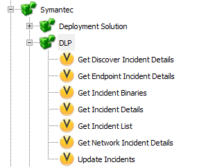
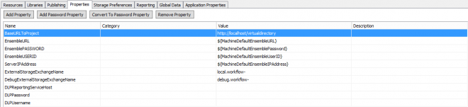

Symantec Data Loss Prevention
https://www.symantec.com/products/dlp
DLP Products
Get visibility of sensitive data leaving your network
Discover, monitor and protect your corporate data with the industry’s leading data loss prevention solution.
https://www.symantec.com/products/data-loss-prevention
Bring security to your data
Drive total protection of your sensitive data with the most comprehensive detection technologies and unified policies of Symantec’s industry leading Data Loss Prevention (DLP).
12.5
Components
Add to your Workflow Project
[Install Drive]:\Program Files\Symantec\Workflow\Shared\components\Symantec.Components.DLP.Reporting.dll

Symantec
DLP
- Get Discover Incident Details
- Get Endpoint Incident Details
- Get Incident Binaries
- Get Incident Details
- Get Incident List
- Get Network Incident Details
- Update Incidents
Properties

| Name | Value |
|---|---|
| DLPReportingServiceHost | |
| DLPPassword | |
| DLPUsername |
APIs
12.5
https://{0}/ProtectManager/services/reporting
14
https://{0}/ProtectManager/services/v2011/incidents?wsdl
Use Case
You could use the "Get Incident List" to bring back a Report that lists the Incident Ids to choose from, select the Incident and use "Get Incident Details" to return the data need, depending on the Type of Incident you can then retrieve extra data you need using the other Components.
If you then need to make any changes to the Incident use the "Update Incidents" to achieve that.